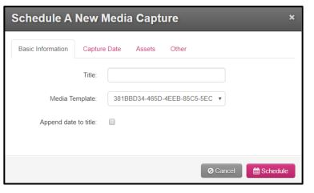

Capturing and Video Management Made Simple
On this page you will will learn how to schedule recording, find scheduled recordings, start adhoc recordings, and access capture devices web browser You can move to a different area on the this page by selecting one of the links below.
- Scheduling a Capture
- Viewing & Deleting Recordings:Scheduler
- Accessing Capture Boxes
- Viewing & Deleting Recordings:Capture Box
Scheduling a Capture
The following example shows how to <schedule a capture.> The preceding link will direct you to the page. Results
Once logged in, you will see two locations to schedule a capture. One is at the very top of the page and the other is to the left of your window on the lecture manager.
After you have selected one of these links you will be redirected to the scheduling page. When the redirect is finished you will see an entry field similar to the image below.
Please insert all of the necessary information and hit ‘Submit’ (Please input military time).
After you have submitted your entry you will see a message that says, "Your lecture has been scheduled" this will let you know that your lecture was scheduled successfully. If it was not scheduled successfully you will receive an error message.
Viewing & Deleting Recordings:Scheduler
Viewing Recordings is simple with the new Lecture Manager. On the <home page> you can navigate to the <view recordings page> by selecting one of two options. The first options is located at the tap of the webpage, and is labeled Show/Delete. The second option is located in the body of the page under Schedule a capture and is titled Show/Delete as well. Please reference the image below.
On this page you will be able to view and delete scheduled lectures. You will that will let you choose a room in LUCOM, choose from same day scheduled recordings, or look ahead at recordings scheduled up to a week or month out. To do this please insert all of the necessary information.
When looking ahead please change the recent recordings day range to blank
Please see image below.
After you have added the necessary criteria to find your respective recording a window will appear below the View Scheduled Recordings entry field. This will show all of the recordings in the selected room that match the criteria.
When selecting ‘Search’ you can view the recording information and choose to remove.
Accessing Capture Boxes
On the <Home> screen you can access all of LUCOM's capture boxes with ease. From the Home screen you can go directly to the
lecture capture box by selecting the picture. When selected you will be redirected to a login screen for that capture box.
Please do not distribute the password to students it should remain internal.
Viewing & Deleting Recordings:Capture Box
After signing in with the designated username and password you will see a Dashboard that allows you to view captures in progress and upcoming scheduled captures. You may select to view a live preview or you may stop the recording at any point.
To view recording, schedule, or delete recordings. You can click on schedule at the very top of the screen. When this is done you will be redirected to a page a page that has all scheduled events for the month as its default view.
This can be manipulated by selecting month, week, or day options on the upper left of the calendar page.blank
Please see image below.
You can click on any event located on this schedule to modify/edit. When the respective event is selected a pop up window will appear as seen below.
You can also schedule the capture by selecting the "Schedule Capture" button.

Once clicked on another window will appear as seen below.
If there are any additional questions concerning this tool or Cattura Capture Boxes please feel free to contact the Liberty University collaboration team at LectureCapture@liberty.edu.